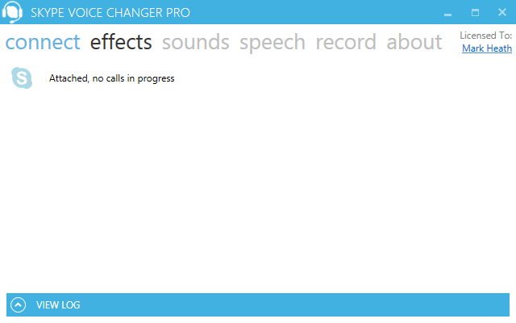
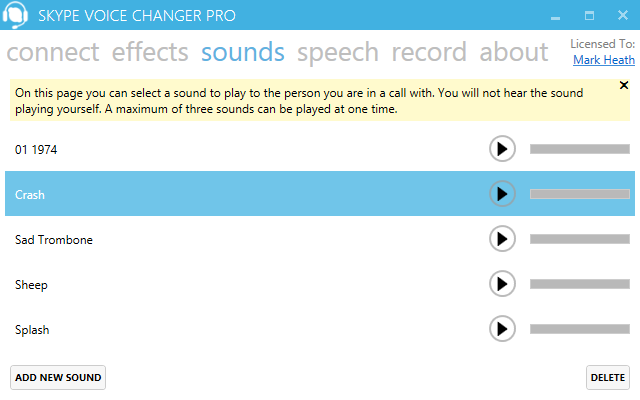
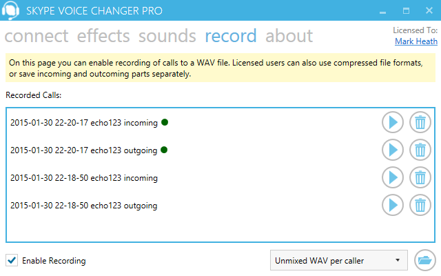
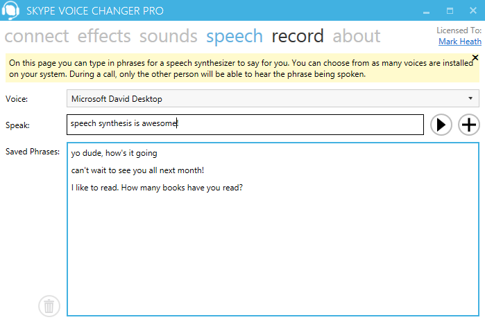
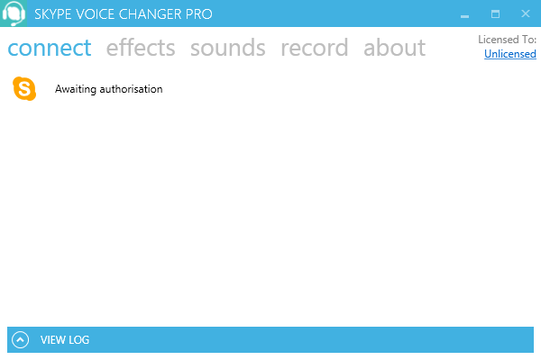
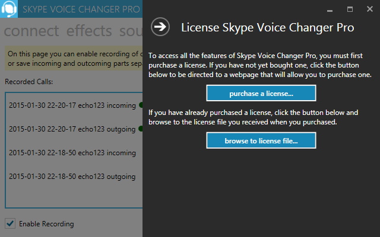
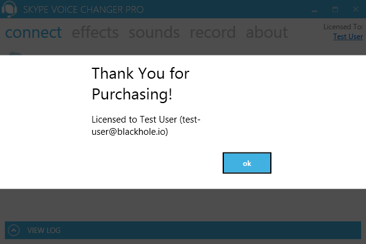

How to use Voice Changer Pro
On this page, you'll learn how to connect to , how to apply effects to your voice, how to play back pre-recorded sounds, and how to record your calls. There's also instructions for how to install your license.
Connecting to
To use Voice Changer Pro, you need the Windows desktop version of running. When you launch Voice Changer Pro, you'll see an icon indicating whether it has successfully detected and attached to . If the desktop version of is not running you'll see the following:

If is running, then Voice Changer Pro will attempt to attach to it. If permission has not yet been granted, you will see the following status:
If you see the awaiting authorization status, you will need to go into and allow access, so that Voice Changer Pro can communicate with . You'll need to click the "Allow Access" button.
Once you have done this Voice Changer will be able to attach, and you should see a notification message similar to the following:

And in Voice Changer, you'll see the following notification that we are attached to . Congratulations - now we are ready to start using Voice Changer Pro.
Using Effects
Using an effect in Voice Changer Pro couldn't be easier. Simply select the effect you would like to apply to your voice from the list on the left in the effects screen (click on "effects" to get to this screen):

There are several fun effects to choose from, and more to come in the future. By default "None" is selected, which means your voice will be unchanged by Voice Changer Pro. All the other effects will modify your voice, so that the person you are speaking to hears the effect. Their voice will not be changed by the effect.
Each effect also comes with one or more parameter sliders, allowing you to fine tune the way they sound to be just what you want. So for example you might want just want a small amount of pitch shift applied to your voice, or you might want to go crazy! You can even adjust these parameters in real-time during a conversation. Please note that the sliders can only be used by licensed users.
Remember!You won't be hearing the change to your voice during the conversation. This is because does not play the sound of your own voice back to you during a call (if it did, you could end up with echo problems on your call).
So to help you understand what each effect sounds like, there is a handy Preview button at the bottom of the effects panel. You can use this at any time so long as a call isn't in progress. It will simply play back a short pre-recorded message through your soundcard, using the selected effect. This will give you an idea of what the effect does.
There's another great way to test out the effects, and that's to make a call to 's own "Echo Test Service". This allows you to place a call which will record your voice and play it back to you. This is a great way to hear what the various effects in Voice Changer Pro will sound like to the other person on your call.
Listen to the effects on offer in this tutorial video:
Play Back Pre-Recorded Sounds
On the sounds screen, you can play back a sound for the other person to hear. To access the sounds screen, simply click on the word Sounds.
Voice Changer Pro comes with a small selection of fun built in sounds for you to make use of in your calls. To trigger any sound, simply press the green play button beside the name of the sound. A progress bar will show you how far through playback you are. To stop a sound midway through, simply press play again.
Remember! You will not hear the sounds while you are in a call - only the person you are speaking to will hear them. However, while you are not in a call, you can click the play button to hear the sounds. Also, a maximum of three sounds can be played at the same time.
If you've purchased a license for Voice Changer Pro, then you will not only be able to replay the built-in sounds, but load your own sounds in. Simply click "Add New Sound", and browse to a media file on your computer. We support most common audio file formats, and will automatically convert it into an appropriate format for playing in . A maximum file length of 10 minutes is supported. Once you're done with that sound, you can delete it safely in Voice Changer Pro, without the original file you imported being touched.
Record your Calls
If you've purchased a license for Voice Changer Pro then you can record your conversations in a variety of different formats. To access the recording settings, go to the Recording screen by clicking on the word "Record".
To set up Voice Changer Pro to record conversations, you need to simply check the Record checkbox. Licensed users will be able to record full calls, while unlicensed users can only record the first 30 seconds. Also, licensed users can select from a variety of compressed audio file types (availability depends on which version of Windows you are running), and you can even save each speaker's audio separately. Here's a rundown of the available options.
| Type | Explanation |
|---|---|
| WAV | Best quality but largest file size (256kbps). |
| Unmixed WAV per caller | One WAV file per participant. A great choice for podcasters who want to edit the audio in Audacity or a DAW. |
| Windows Media Audio | Smallest file size (16kbps). Available on all versions of Windows. A great choice for archiving your calls without using up loads of disk space. |
| MP3 | Most popular audio file format (48kbps). Available on Windows 8 and above. A great choice for sharing with friends or on the internet. |
| AAC | A well-known cross platform standard (96kbps) Available on Windows 7 and above. A great alternative if your version of Windows doesn't include an MP3 encoder. |
When a call finishes, it is added to the list of recordings and a green dot beside the recording indicates that this is a new call. From here you can play the recording (will launch Windows Media Player), delete it, or open the folder in which the calls are stored.
Remember! Recorded can take up a lot of disk space. Delete calls you no longer have need for, or archive them into another folder.
If you are using a version of Windows that does not include an MP3 encoder and would still like to convert your recordings to MP3, lots of popular audio convertor programs will do this for you. One good one is lame.exe. Just save your calls as WAV, and then convert them afterwards.
Learn how easy it is to record your calls in this video tutorial:
Speak using a Computer Generated Voice
On the Speech page, you can use a built-in computer generated voice to say whatever you type.
The voices available to you will depend on which version of Windows you have installed. Microsoft have many different voices, including Microsoft Desktop Sam, Anna, Zira, Heena, David, and Hazel. Each voice has its own character and accent. Usually you will have at least one of these available, and Windows 8 and above users should have two or three options available.
To try out a voice, simply type a phrase into the textbox and press play. If you're not in a call, you'll hear the phrase spoken with your selected voice. You can also save time, by adding the phrases you've created to a list of saved phrases, ready for when you are in a call. Remember! You will not hear the voice while you are in a call - only the person you are speaking to will hear it. Only one phrase can be spoken at a time, and if you try to play another while one is playing, it will be queued up.
You'll get to try out this feature for 14 days after installing, but if you want to continue using it after that, you will need to purchase a license.
Installing Your License
If you've purchased Voice Changer Pro, then in your confirmation email, you should have received a link to a license file with a ".lic" extension. Download this, and save it somewhere on your computer. In the top right hand corner, you will see a link saying "Unlicensed" as shown in the following image:
When you click this, the license entry screen opens up:
In the license entry, screen, click the "browse to license", and browse to the .lic file you downloaded from the link in the confirmation email. Once you have done this, you will be thanked with the following message.
Once you close this message, you will see your name in the top right hand corner, and you will be able to access all the functionality of Voice Changer Pro.
FAQ
Will it work on my machine?
The best way to answer that question is to try it! It costs nothing to install, and you'll be able to record 30 seconds of your call to hear what sounds and effects the other person was hearing after the call has ended. The basic requirements are Windows (Vista, 7, 8, or 10). For best results, make sure you have the latest desktop version of installed.
What can the trial edition do?
The trial edition lets you access seven voice effects, replay 6 built-in pre-recorded sounds, and record the first 30 seconds of your calls in WAV format only. You can also try out the speech synthesis feature for 14 days.
What do I get by purchasing a license?
By purchasing a license you'll unlock the full capabilities of Voice Changer Pro. This means you'll be able to record your entire calls, as well as be able to select from a number of additional recording formats such as WMA, AAC or MP3 (exact formats available depend on your version of Windows). You'll also be able to record both the inbound and outbound portions of a call separately. You'll be able to import your own sounds to replay, rather than being restricted to the built-in ones. You'll also gain access to the ability to adjust the effects parameters in real-time to fine tune the effects. You'll also be able to say anything in a computer generated voice using the speech synthesis feature. Finally, as a paying user you'll benefit from free lifetime updates, so you'll get immediate access to all future improvements and features.
Why can't I hear my voice / sounds during calls?
To prevent a feedback loop where the the person you are talking to doesn't hear multiple echoes of the same sound, we currently do not play the sound of your modified voice or the sounds you are replaying back to you during a call. We have some ideas about how we could make this possible for people using headsets, so watch out this in for a future update.
How can I test that the effects and sounds are working?
The best way of testing Voice Changer is to make a call to the Echo / Sound Test Service. This will record your voice and play it back to you. That way you get to hear what the effects and sounds that you have played sound like to the other user.
Are conference calls supported?
The current version of Voice Changer Pro just works with a two person conversation. But conference calls are definitely a feature we'd like to add in the future, if there is enough demand.
How many computers can I install it on?
If you are the only person using your license of Voice Changer Pro, then you can install it on up to three computers. If you are sharing your license with family members, then you may only install it on one computer. Businesses must buy a license for each user of the software.
Can I record to MP3?
If you purchase a license, Voice Changer Pro will unlock the option to record your calls in WMA, AAC or MP3, if your version of Windows has those encoders available. By default, all supported versions of Windows will have WMA available. Windows 7 and above will support AAC (MP4 audio), and you'll need Windows 8 or newer for the MP3 encoder to appear (unless you have installed a separate MP3 encoder on your machine). If you happen to be running Voice Changer on a Server edition of Windows, you may need to install the "Desktop Experience" Windows component for these options to appear.
Why am I getting an error saying that cannot intercept the audio?
We are aware that in recent versions of , some users have been unable to use Voice Changer Pro when making outgoing calls. This is unfortunately due to an issue with the Desktop API that Voice Changer Pro relies on in order to intercept the audio. If you are encountering this problem, one workaround you may be able to use is to try with a different account. Another option is to go back to an earlier version of . For example, v7.16.0.102 is known to work. Another site offering downloads of previous versions of is File Hippo. (Please note we cannot be responsible for the contents of these external sites). If this error persists for you, please get in touch at [email protected] and we will do our best to help you.
What can I do if I have a problem?
The best way to see if Voice Changer is right for you is to install the trial version first, and see if it works with your computer. However, if you have bought a license and are having any troubles getting it working on your computer, please contact us at [email protected]. Also, if you see any error messages in Voice Changer, please submit the error details to us using the button on the error dialog, which will allow us to investigate your problem and provide an update. Finally, we hope everyone will be delighted with Voice Changer, but if you really aren't satisfied within 30 days of purchasing, then get in touch with us and we'll arrange a full refund.
What is your privacy policy?
We do not share your email address with third parties. All payments are handled securely by paddle.com and your payment details are not stored at all on our servers. We do make use of cookies for analytics tracking and special offers. If you subscribe for our mailing list, you can unsubscribe at any time through use of the unsubscribe link at the bottom of every email. If you decide to submit an error report from within the application, it will not contain any phone numbers or user names, and will be used purely for the purposes of improving the application. If you have any further questions or concerns, feel free to contact us at [email protected].